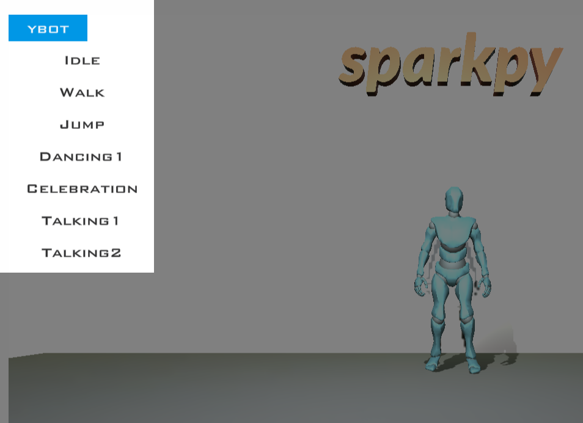

Welcome to Sparkpy !
Indices and tables
Introduction
Sparkpy is a platform to learn and create Python programming projects using interactive 3D graphics.
Basics
Create an environment
To create a scene an environment is needed
1import sparkpy
2
3#create a desert enviroment
4sparkpy.CreateEnvironment('Desert')
Note
A list of all current environments
"Desert" |
"Forest" |
"AlienPlanet" |
"GasPlanet" |
"Office" |
"SciFi" |
"Default" |
Create a character
To create a character, first make an environment then create the character
1import sparkpy
2
3#create office environment
4sparkpy.CreateEnvironment("Office")
5
6#create robot character
7sparkpy.CreateCharacter("YBot")
Note
A list of all current characters
"Amy" |
"Bryce" |
"Lewis" |
"Michelle" |
"YBot" |
"XBot" |
Character animation
Set the animation for a character using SetAnimation
1import sparkpy
2
3#set animation example
4
5#create office environment
6sparkpy.CreateEnvironment("Office")
7
8#create robot character
9ybot = sparkpy.CreateCharacter("YBot2")
10
11#set animation to walk
12sparkpy.SetAnimation(ybot, "Walk")
13
14#set animation speed
15sparkpy.SetAnimationSpeed(ybot, 1)
Tip
A list of all available animation names for a given character is shown in the explorer view
Tip
The speed of the animation can controlled with SetAnimationSpeed
Character movement
A character can be moved using the Move Method
1import sparkpy
2
3#move character exaample
4
5#create office environment
6sparkpy.CreateEnvironment("forest")
7
8#create robot character at position x=0 y0 z=3
9ybot = sparkpy.CreateCharacter("xbot",0,0,3)
10
11#set animation to walk
12sparkpy.SetAnimation(ybot, "Walk")
13
14#move the character for 5 seconds
15sparkpy.Move(ybot,5)
Note
you will notice that the character’s animation continues to play after the movement ends. This is behaviour can resolved using waits [LINK NEEDED]
Character rotation
A character can be rotated using the Rotate Method
1import sparkpy
2
3#rotate character exaample
4
5#create office environment
6sparkpy.CreateEnvironment("home")
7
8#create robot character at position x=0 y0 z=3
9bryce = sparkpy.CreateCharacter("bryce",0,0,3)
10
11#rotate 90 degres in 2 seconds, in the counter clockwise direction
12sparkpy.Rotate(bryce,90, 2, "ccw")
Character hide and show
A character can be hidden (invisible) using the Hide Method
1import sparkpy
2
3#hide character exaample
4
5#create an environment
6sparkpy.CreateEnvironment("forest")
7
8#create a character at position x=0 y0 z=3
9bryce = sparkpy.CreateCharacter("bryce",0,0,3)
10
11#character exists but will not be shown in the screen
12sparkpy.Hide(bryce)
Note
A character that is hidden can be shown again using Show()
Character chat
A character can create a chat box using the Chat Chat
1import sparkpy
2
3#chat example
4
5#create an environment
6sparkpy.CreateEnvironment("home")
7
8#create a character
9bryce = sparkpy.CreateCharacter("bryce")
10
11#create a chat box for 5 seconds
12sparkpy.Chat(bryce, "Hello World", 5)
Control character with keyboard
To move a character with the keyboard, use the SetControlMode() method
1import sparkpy
2
3#control character with keyboard example
4
5#create office environment
6sparkpy.CreateEnvironment("Office")
7
8#create robot character
9ybot = sparkpy.CreateCharacter("YBot")
10
11#set control mode to keyboard
12sparkpy.SetControlMode(ybot,"keyboard")
User Input
Input box (non blocking)
You can get input from the user using the ShowInputBox() This method accepts a function to call when input has been recieved, the function must accept one parameter which represents the text that was entered in the input box. You can hide an input box using HideInputBox()
1import sparkpy
2
3#inputbox example
4
5#input box handler function
6def InputEntered(inputText):
7
8 #print the recieved text
9 print("input box recieved " + inputText)
10
11 #once the input has been recieved, do not show the input box anymore
12 sparkpy.HideInputBox()
13
14#create desert environment test
15sparkpy.CreateEnvironment('desert');
16
17#set the callback function
18sparkpy.SetInputBoxHandler(InputEntered)
19
20#show input box
21sparkpy.ShowInputBox()
22
23#any code after ShowInputBox() continues to run regardless if text has been entered
Note
ShowInputBox() is asynchronous (non-blocking) meaning any code after the ShowInputBox() will continue to run regardless if text has been entered or not. To make input from the user synchronous (blocking) meaning any code after the ShowInputBox() can only be run after input has been entered, you can use python input(see below)- though this will block the entire application including any animations and character movement or async await for input event() [LINK NEEDED]
Input box (blocking)
1#blocking input call
2
3#create desert environment test
4sparkpy.CreateEnvironment('desert');
5
6#ask the user for a name, note the entire application will be paused
7#until a value is entered
8name = input("Please enter your name")
9
10#output the name to the console
11print("Welcome to sparkpy " + name)
Collisions
Collisions can be captured between two characters or primitives, using a callback function set with SetCollisionHandler() when a collision occurs, the callback function is called. The callback function must have two parameters which will be set to the ids of the two objects that collided
Collision (non blocking)
1import sparkpy
2
3#collision example
4
5#create collision handler function, the two ids represent the ids of the objects that collided
6def collision(id1,id2):
7 print("Collision occured between " + str(id1) + "," + str(id2))
8
9#assign the collision handler function
10sparkpy.SetCollisionHandler(collision)
11
12#create an office environment
13sparkpy.CreateEnvironment("Office")
14
15#create first character
16ybot = sparkpy.CreateCharacter("ybot")
17
18#create seconf character
19xbot = sparkpy.CreateCharacter("xbot",2,0,0)
20
21#set control mode to keyboard
22sparkpy.SetControlMode(ybot,"keyboard")
Note
SetCollisionHandler() is asynchronous (non-blocking) meaning any code after the SetCollisionHandler() will continue to run regardless of if a collision has occured or not. To make collision detection synchronous (blocking) meaning any code after a collision can only be run after a collision has occured, use async await for collision event() [LINK NEEDED]
Collision (blocking)
TODO
Sounds
Environment music
The PlaySceneSound() will play background music for the scene. The music will loop by default
1import sparkpy
2
3#create office environment
4sparkpy.CreateEnvironment("home")
5
6#create robot character at position x=0 y0 z=3
7ybot = sparkpy.CreateCharacter("xbot",0,0,3)
8
9#set animation to dancing
10sparkpy.SetAnimation(ybot, "dancing1")
11
12#play background music, music will loop by default
13sparkpy.PlaySceneSound("rockmusic1")
Note
Scene music can be stopped with StopSceneSound() The current list of music
"rockmusic1" |
"funkymusic1" |
Sound FX
To play a sound effect for a specific character, use PlayCharacterSound() Sound effects do not loop by default
1import sparkpy
2
3#simple quiz with sound effects
4
5bryceid = 0
6
7#input box handler function
8def ProcessAnswer(answer):
9
10 #print the recieved text
11 print("input box recieved " + inputText)
12
13 #make the answer case insenstive
14 inputText = inputText.toLower()
15
16 if(answer == "paris"):
17
18 #play an apploause sound effect
19 sparkpy.PlayCharacterSound(bryceid, "applause1")
20
21 #let the user know their answer is correct
22 sparkpy.Chat(bryce,"Correct!! ",10)
23
24 #do a victory dance
25 sparkpy.SetAnimation("dancing1")
26
27 else:
28
29 #play a boo sound effect
30 sparkpy.PlayCharacterSound(bryceid, "boo1")
31
32 #let the user know their answer is correct
33 sparkpy.Chat(bryce,"Not correct",10)
34
35 #play a talking animation for the character
36 sparkpy.SetAnimation(bryceid,"talking2")
37
38 #once the input has been recieved, do not show the input box anymore
39 sparkpy.HideInputBox()
40
41
42#create an environment
43sparkpy.CreateEnvironment('home')
44
45#create a character
46bryceid = sparkpy.CreateCharacter('bryce')
47
48#play a talking animation for the character
49sparkpy.SetAnimation(bryceid,"talking1")
50
51#ask the user a question, keep the question on the screen for 20 seconds
52sparkpy.Chat(bryce,"What's the captial of france? ",20)
53
54#set the input box callback function
55sparkpy.SetInputBoxHandler(ProcessAnswer)
56
57#show input box
58sparkpy.ShowInputBox()
Note
The current list of sound effects
"applause1" |
"beep1" |
"beep2" |
"boo1" |
"gun1" |
"gun2" |
"lose1" |
"lose2" |
"lose3" |
"swipe1" |
"swipe2" |
"transport1" |
"win1" |
"win2" |
"win3" |
"bounce1" |
Effects
Creating effects
The CreateEffect() will create a special effect, it’s default position is 0 The colour of the effect can be set with SetEffectColour() An effecct can be stopped with StopEffect()
1import sparkpy
2
3#special effects example
4
5#create office environment
6sparkpy.CreateEnvironment("office")
7
8#create a portal effect
9eid=sparkpy.CreateEffect("portal")
10
11#set colour to red from default
12sparkpy.SetEffectColour(eid,"red")
Note
The current list of effects:
"portal" |
The current list of colours:
"yellow" |
"clear" |
"grey" |
"magenta" |
"cyan" |
"red" |
"black" |
"white" |
"blue" |
"green" |
Primitives
Create Primitive
Primitives are simple shapes that have no animations attached to them. To create a primitive use the CreatePrimitive() method
1import sparkpy
2
3#make a cube at position x=0 , y=1, z=0
4cubeID = sparkpy.CreatePrimitive('cube',0,1,0)
Note
The current list of primitive:
"sphere" |
"capsule" |
"cylinder" |
"plane" |
"quad" |
"cube" |
To hide a created primitive, use the HidePrimitive() method To show a previously hidden primitive, use the ShowPrimitive() method
Set Primitive Colour
To set the colour of a primitive, use the SetPrimitiveColour() method. The method accepts the levels of red, green and blue was values between 0-1. The transparancy of a primitive can also be set as a avlue between 0 (fully invisible) to 1 (fully opaque)
1import sparkpy
2
3#make a cube at position x=0 , y=1, z=0
4cubeID = sparkpy.CreatePrimitive('cube',0,1,0)
5
6#set the colour to red
7sparkpy.SetPrimitiveColour(1,0,0)
Destroy Primitive
If a primitive is no longer needed in the program DestroyPrimitive() will remove the primitive completely
1import sparkpy
2
3#make a cube at position x=0 , y=1, z=0
4cubeID = sparkpy.CreatePrimitive('cube',0,1,0)
5
6#the cube is no longer needed, remove it
7sparkpy.DestroyPrimitive(cubeID)
Scale Primative
To make a primitive bigger or smaller, use the ScalePrimative() method
1import sparkpy
2
3#make a cube at position x=0 , y=1, z=0
4cubeID = sparkpy.CreatePrimitive('cube',0,1,0)
5
6#double the size of the cube
7sparkpy.ScalePrimative(cubeID, 2)
Note
to scale in a specific direction (non-uniform scale), provide the sizes of the x,y,z scale when using ScalePrimative() <Source/sparkpy.html#sparkpy.ScalePrimative>`_
1import sparkpy
2
3#make a cube at position x=0 , y=1, z=0
4cubeID = sparkpy.CreatePrimitive('cube',0,1,0)
5
6#double the size of the cube, along the x and z axis
7sparkpy.ScalePrimative(cubeID, 2,1,2)
Rotate Primitive
To rotate a primitive, use the RotatePrimitive() by default primitives are rotated around their y (up) axis
1import sparkpy
2
3#make a cube at position x=0 , y=1, z=0
4cubeID = sparkpy.CreatePrimitive('cube',0,1,0)
5
6#rotate the cube at a speed of 90 degrees per second
7sparkpy.RotatePrimitive(cubeID, 90)
Move Primitive
To move a primitive, use the MovePrimitive() method.
1import sparkpy
2
3#make a cube at position x=0 , y=1, z=0
4cubeID = sparkpy.CreatePrimitive('cube',0,1,0)
5
6#move the cube to right at a speed of 10 for 2 seconds
7cubeID = sparkpy.MovePrimitive(cubeID, 2, 10, "right")
Note
direction values can be:
"up" |
"down" |
"left" |
"right" |
Loop Primitive Move
To make a primitive continuously move between two points, use the LoopPrimitiveMove()
1#make a cube
2cubeID = sparkpy.CreatePrimitive('cube',0,1,0)
3
4#loop move from right to left and back again for 2 seconds at a speed of 1.
5sparkpy.LoopPrimitiveMove(cubeID, 2, 1, "right")